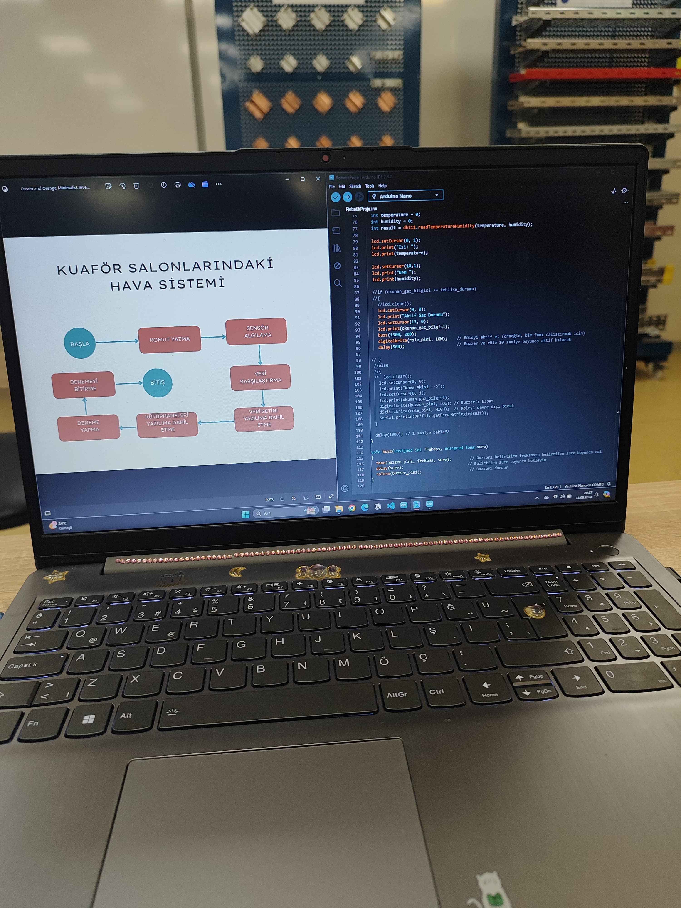
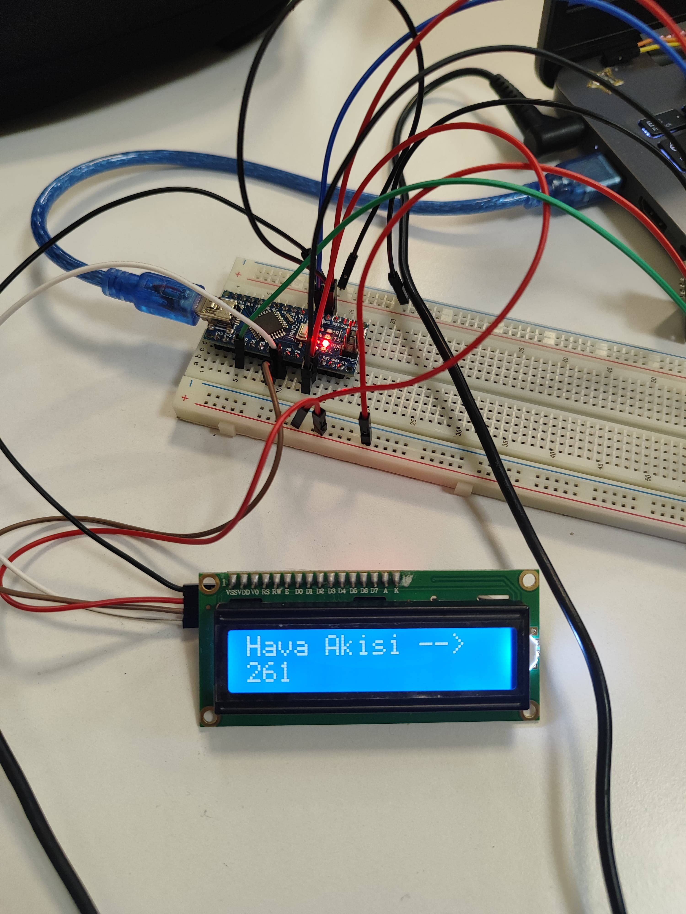
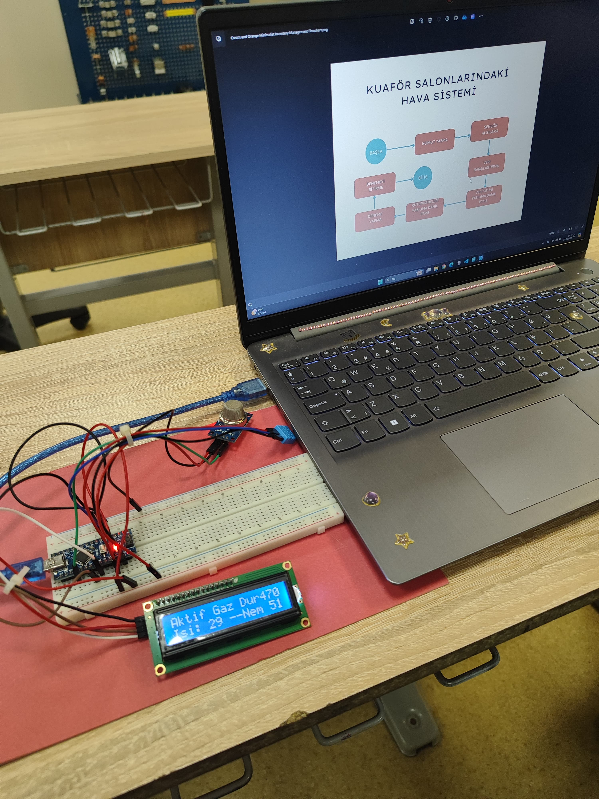
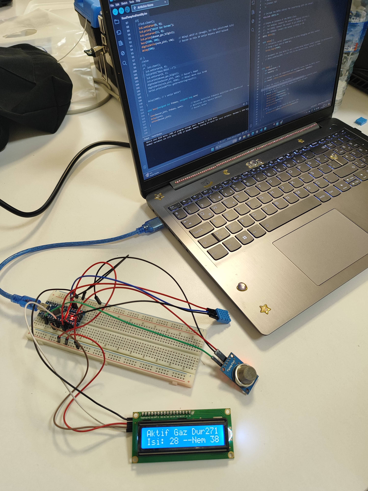

Bu projenin amacı, kuaför salonlarında çalışanların ve müşterilerin maruz kaldığı hava kalitesini ölçmek ve salon içi havalandırma sistemlerini otomatik olarak yönetebilmektir. Böylece, salon içerisindeki aktif gaz seviyeleri, sıcaklık ve nem değerleri sürekli olarak takip edilerek, sağlıklı bir ortam sağlanması hedeflenmiştir.
Sistem, Arduino Nano mikrodenetleyici ile MQ-135 hava kalitesi sensörü ve DHT11 sıcaklık & nem sensörü kullanılarak kurulmuştur. Sensörlerden alınan veriler, Arduino üzerinde işlenerek i2C LCD ekrana aktarılmıştır. Sistemin kurulumu sırasında sensör bağlantıları dikkatle yapılmış ve kablo renk kodlaması ile hatasız bağlantı sağlanmıştır.
İlk aşamada yalnızca MQ-135 sensörü ile aktif gaz ölçümü yapılmış, ardından DHT11 sensörü entegre edilerek sıcaklık ve nem ölçümleri eklenmiştir. LCD ekranda tüm bilgilerin doğru şekilde görüntülenebilmesi için veri formatları ve sayılar optimize edilmiştir. Farklı test denemeleri gerçekleştirilmiş ve her bir sensörden alınan değerlerin doğruluğu onaylanmıştır.
Proje sürecinde, grup ile birlikte akış şeması hazırlanmış ve sistemin mantıksal işleyişi adım adım planlanmıştır. Sensörlerin çalışma prensipleri öğrenilmiş, sistemin testleri yapılmış ve proje sonunda kullanıcıların gözlemleyebileceği bir prototip ortaya çıkarılmıştır.
Yapılan testler sonucunda, MQ-135 sensörü ile aktif gaz ölçümleri %100 doğrulukla alınabilmiş, DHT11 sensörü ile sıcaklık ve nem ölçümleri de ekran üzerinde doğru şekilde görüntülenmiştir. Böylece proje, kuaför salonları için uygulanabilir bir hava kalite izleme ve otomatik havalandırma prototipi olarak başarılı bir şekilde tamamlanmıştır.



